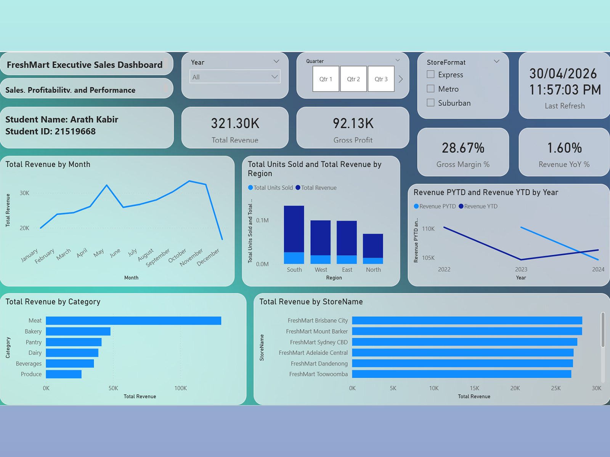
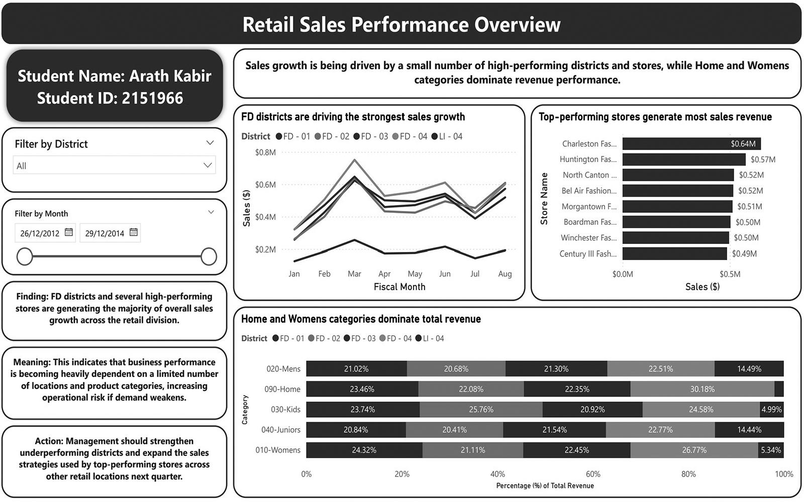

Data Analytics & BI
SQL, Python, R, Power BI, Excel, dashboards, reporting and data interpretation.

Data Analytics and Business Analytics professional with a strong foundation in data analysis, data visualisation, and information systems. Proficient in SQL, Python, R, Power BI and Excel, with the ability to transform complex datasets into actionable insights that support informed business decision-making.
Experienced in ERP data analysis, system security validation, cloud-based solution design, encryption mechanisms, containerised deployment and structured technical documentation.
Master of Information Systems and Technology, majoring in Data Analytics & Visualisation.
ERP security validation, cloud architecture, documentation and technical support contribution.
Machine learning and deep learning research contribution in public health analytics.
Master of Information Science and Library Management from University of Rajshahi.
SQL, Python, R, Power BI, Excel, dashboards, reporting and data interpretation.
Data cleaning, transformation, data modelling, database design and ERP data analysis.
Jupyter Notebook, VS Code, Git, GitHub, GitLab, Microsoft Visio and IBM Informix.
Role: Technical Support & Documentation Manager. Analysed ERP security datasets, improved hardcoded credential handling, supported AES encryption, Docker deployment and AWS cloud architecture design.


Role: Data Analyst & Dashboard Developer. Developed an interactive Power BI dashboard to analyse sales performance, identify trends and support data-driven decision-making. The project focused on transforming raw sales data into meaningful business insights.


Curtin University, Australia | Major in Data Analytics & Visualisation
University of Rajshahi, Bangladesh
University of Rajshahi, Bangladesh


Australian Red Cross | 2026 – Present
COIN Social Organisation | 2019 – 2021
Blood Donate Club, Rajshahi | 2015 – 2020